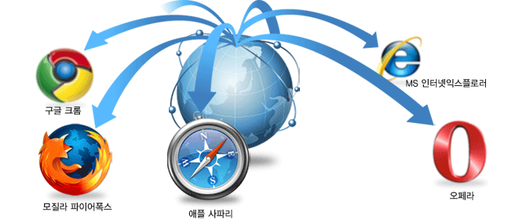

웹표준 정의 웹표준(Web Standards)은 웹에서 표준적으로 사용되는 기술의 총칭으로 대표적인 국제적 표준화 단체인 W3C가 정한 웹을 만드는 기술 권고안을 말합니다.
웹표준은 구속력이 있는 것은 아닙니다.
하지만 미국과 일본, 유럽등에서 장애인법을 시행하면서 구속력을 행사하기 위한 범위의 설정을 가이드 한 것이 결국에는 W3C 권고안이었기에 일반적으로 W3C = 웹표준으로 관례화 되었다고 보는 것이 통상적입니다.
웹을 제작하는 데는 두가지 방식이 있습니다. 하나는 비표준모드로 드림위버같은 웹제작툴로 만드는 방식이고 또 하나는 W3C의 권고안대로 제작하는 방식입니다.
비표준모드로 제작한다고해서 홈페이지가 잘못되엇다는 것은 아닙니다. 오히려 익스플로어에서는 구현이 더 잘되기도 합니다.
비유해서 설명하자면 서울에서 부산까지 차로 가는 경우 도로 및 교통정보등 정형화된 정보를 이용하게 되면 표준이고 무시하고 내키는 대로 간다면 비표준이 되겠습니다.
당연히 표준모드를 따르는 것이 웹제작에서 시간과 비용을 줄일 수 있습니다. 웹표준은 웹을 제작하기 위한 표준화된 최적의 기술입니다.
- 웹표준을 따르면 무엇이 좋은가요?
- 어느 웹브라우저에서도 볼 수 있습니다.
웹브라우저는 익스플로어,파이어폭스,오페라,사파리,구글,크롬등 다양하게 있습니다. 웹표준에 준거하면 다양한 브라우저에서도 똑같은 형태로 볼 수 있습니다.
사이트업데이트 작업이 용이하다.
웹표준에 다르면 홈페이지는 문서구조와 스타일시트를 따로 분리해서 만듭니다. 스타일을 변경하고 싶다면, 해당 스타일 시트만 열어서 변경하면 모든 웹페이지 디자인에 똑같이 적용할 수 있습니다.
페이지랜더링속도가 빨라진다.
디자인부분은 모두 CS파일로 정리한다. 이르 통해 인터넷익스플로어등의 웹브라우저에서 다시 해당 CSS 파일을 캐쉬하여 다른 페이지를 접속하더라도 해당 페이지의 랜더링 속도가 빨라집니다.
접근하기 쉬운 홈페이지가 됩니다. 웹표준에 따른 홈페이지는 남녀노소할것 없이 장애인이라도 할지라도 누구나 쉽고 어려움 없이 접속할 수 있게 됩니다.
검색엔진에서 노출이 잘된다.
구글과 같은 검색사이트에서 검색결과로 페이지를 상위로 랭크할 수 있습니다. - 웹표준 적용시 단점은?
- 웹표준은 주요 웹브라우저인 익스플로어 전용이 아닙니다.
국내 시장에서는 점유율이 높지않은(현재는..) 파이어폭스등의웹브라우저가 웹표준에 잘 따릅니다. 웹표준을 준수한 홈페이지는 익스플로어(특히 6.0 이하)는 제대로 구현되지 않을 수 있습니다.
플러쉬나 오브젝트 파일등 적용에 제한이 있습니다.
플러쉬나 오브젝트 파일등 익스플로어 전용 기술 구현에 제약이 있어 역동적인 제작에 한계가 있습니다.
크로스브라우징, 웹접근성, 핵과필터등 여러 변수를 고려해애합니다. - 웹표준의 구조언어와 표현언어
- 웹표준은 두 가지로 나누어 볼 수 있는데 HTML4.01을 XML 문법으로 표현한 XHTML과 웹 페이지 스타일을 지정하는 CSS가 있습니다.
HTML은 웹페이지를 표시하는데 기본 언어로서 사용됩니다.
웹 컨텐츠의 내용은 표준 HTML 포맷으로 적용해야 하며 정보가 독점적인 고유 포맷으로 제공되는 경우, HTML 포맷도 제공되어야 합니다.
브라우저 호환성은 모든 경우에 있어 고려되어야 하며, 웹사이트는 단일 웹 브라우저에 맞추어 제작되어서는 안되며, 클라이언트 그룹에 의해 빈번하게 사용되는 웹 브라우저에서 올바르게 작동해야 합니다.
최신의 HTML 표준은 4.01이지만 HTML을 XML과 결합한 XHTML이 권고안으로 나와 있습니다.
HTML2/3와 달리 최신 XHTML 표준은 , , 같은 표현 요소들을 배제하고, 태그를 모두 닫도록 권고하는 등 정확한 문서 규격을 요구하고 있습니다.